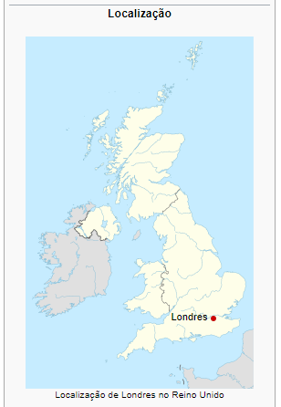

Londres (em inglês: London) é a capital da Inglaterra e do Reino Unido. Por dois milênios, foi um grande povoado e sua história remonta à sua fundação pelos romanos, quando foi nomeada Londínio.[2] O centro de Londres, a antiga City of London, também conhecida como The Square Mile ("a milha quadrada") ou The City, mantém suas fronteiras medievais. Pelo menos desde o século XIX, o nome "Londres" se refere à metrópole desenvolvida em torno desse núcleo. Hoje, a maior parte dessa conurbação constitui a região da Grande Londres, cuja área administrativa tem seu próprio prefeito eleito e assembleia. Londres é uma importante cidade global (ao lado de Nova Iorque, Tóquio e Paris) e é um dos maiores, mais importantes e influentes centros financeiros do mundo. O centro de Londres abriga a sede de mais da metade das 100 melhores companhias do Reino Unido (o índice FTSE 100) e mais de 100 das 500 maiores da Europa. Londres possui forte influência na política, finanças, educação, entretenimento, mídia, moda, artes e cultura em geral, o que contribui para a sua posição global. É um importante destino turístico para visitantes nacionais e estrangeiros. Londres sediou os Jogos Olímpicos de Verão de 1908, 1948 e 2012.
Londres tem uma gama diversa de povos, culturas e religiões e mais de 300 idiomas são falados em seu território. Em julho de 2007, a população oficial era de 7 556 900 habitantes dentro dos limites de Londres, tornando-se o município mais populoso da União Europeia. Sua área urbana (a segunda maior da UE) tem uma população de 8 278 251 habitantes, enquanto a região metropolitana (a maior da UE) tem uma população total (rural e urbana) estimada entre 12 milhões e 14 milhões de habitantes. O Metrô de Londres, administrado pela Transport for London, é a mais extensa rede ferroviária subterrânea do mundo, o Aeroporto de Londres Heathrow é o aeroporto mais movimentado do mundo em número de passageiros internacionais. e o espaço aéreo da cidade é o mais movimentado do qualquer outro centro urbano do mundo. A cidade possui quatro Patrimônios Mundiais: a Torre de Londres; os Reais Jardins Botânicos de Kew; o local que compreende o Palácio de Westminster, a Abadia de Westminster e a Igreja de Santa Margarida; e o local histórico de Greenwich (onde o Observatório Real de Greenwich marca o meridiano primário, 0° longitude e GMT). Outros marcos famosos incluem o Palácio de Buckingham, a London Eye, Piccadilly Circus, a Catedral de São Paulo, a Tower Bridge, a Trafalgar Square e o The Shard. Londres é a sede de inúmeros museus, galerias, bibliotecas e outras instituições culturais, como o Museu Britânico, a National Gallery, Tate Modern e a Biblioteca Britânica. O metrô de Londres é a mais antiga rede ferroviária subterrânea do mundo.
A etimologia de Londres é incerta. O termo é antigo, pode ser encontrado em fontes do século II. Em 121. a cidade foi registrada como Londinium (Londínio), o que aponta para a sua origem romano-britânica. A primeira tentativa de explicação (agora desconsiderada) para o surgimento do nome da cidade é atribuída a Godofredo de Monmouth em sua obra Historia Regum Britanniae. Monmouth afirma que o nome se originou a partir do hipotético Rei Lud, que havia sido levado para a cidade e a nomeou de Kaerlud. Em 1898, era comumente aceito que o nome era de origem celta e que significa lugar pertencente a um homem chamado * Londinos; esta explicação já foi rejeitada. Richard Coates apresenta uma outra explicação em 1998, dizendo que a palavra Londres é derivada do termo do antigo europeu pré-céltico *(p)lowonida, ou rio muito largo para vadear, e sugeriu que este era um nome dado para a parte do rio Tâmisa que atravessa Londres; a partir deste termo, o assentamento ganhou a forma céltica de seu nome, * Lowonidonjon; no entanto, isso requer uma alteração bastante complexa. A dificuldade reside em conciliar a forma latina Londinium com a forma em galês moderno Llundain, que deveria exigir a forma *(h)lōndinion (em oposição a *londīnion), a partir de *loundiniom. Até 1889, o nome "Londres" foi oficialmente aplicado apenas para a cidade de Londres, mas, desde então, também se referiu ao Condado de Londres e, agora, à Grande Londres.
Duas descobertas recentes indicam prováveis assentamentos muito antigos próximos ao Tâmisa, na área de Londres. Em 1999, os restos de uma ponte da Idade do Bronze foram encontrados na área costeira ao norte da Vauxhall Bridge. Esta ponte ou cruzava o rio Tâmisa, ou era ligada a uma ilha (perdida) no rio. Técnicas de dendrologia dataram as madeiras ao ano de 1 500 a.C.. Em 2010, as bases de uma grande estrutura de madeira, datada de 4 500 a.C., foram encontradas na área costeira do Tâmisa, ao sul de Vauxhall Bridge. A função dessa estrutura mesolítica ainda não é conhecida. Ambas as estruturas estão em South Bank, em um ponto de cruzamento natural, onde o rio Effra deságua no rio Tâmisa. Embora não haja evidências de assentamentos britânicos dispersos na área, a cidade começou quando foi fundada por volta de 43 com o nome de Londínio, no tempo em que as tropas do exército romano lideradas pelo imperador Cláudio tomaram posse da Inglaterra. Os romanos utilizaram materiais de construção da época para a realização das obras de um porto fluvial na margem norte do rio Tâmisa, que ainda não o era como de hoje. Na verdade, os romanos apontaram esse lugar como propício para a sua construção porque nas margens do rio, a leste desse ponto estratégico, existiam muitas áreas pantanosas. O porto recebeu dos romanos o nome de Londínio, que na língua inglesa quer dizer London e na língua portuguesa pode ser traduzido como Londres.

Esta fase durou cerca de 25 anos até a pilhagem pelos icenos, tribo celta, liderada pela rainha Boadiceia. Londres foi reconstruída, possibilitando um rápido desenvolvimento nos anos seguintes. Acredita-se que se tenha tornado a capital da Britânia no século II, substituindo a antiga capital, Colchester. Nas primeiras décadas do século III, os soldados romanos serviram como pedreiros nas obras do então chamado Muro de Londres ao redor da cidade, cujo objetivo era uma solução para evitar que a área urbana da época fosse destruída. O Muro de Londres, propriamente dito, e as muralhas posteriores serviram como limites da atual capital do Reino Unido há séculos. Em 410, ocorreu a invasão bárbara em Roma. Naquela época, os soldados da província romana da Britânia foram confiados pela segunda vez para expulsar os invasores, mas nada adiantou. Sua população de aproximadamente 45 000 a 60 000 habitantes acabou diminuindo em virtude do domínio bárbaro. De acordo com os historiadores, o ano de 410 é a data que marca a época em que a Inglaterra deixou de ser governada pelos romanos e passou a ser entregue aos bárbaros. Os ingleses nascidos na própria Inglaterra, que já se transferiram com suas bagagens para Londres, firmaram como sua verdadeira morada e fizeram com que a povoação continuasse sendo um centro comercial. Pouca coisa sobreviveu da Londres romana, menos porções do que era antigamente o Muro de Londres e ruínas de algumas escassas obras da arquitetura romana.
A Grande Londres ocupa uma área de 1 583 quilômetros quadrados, continha uma população de 7 172 036 de habitantes em 2001 e uma densidade populacional de 4 542 habitantes por quilômetro quadrado. A área maior, conhecida como Região Metropolitana de Londres, cobre uma área de 8 382 quilômetros quadrados (3 236 sq mi), tem uma população de 12 653 500 e uma densidade populacional de 1 510 habitantes por quilômetro quadrado. A Londres moderna se estende pelo Tâmisa, sua característica geográfica primária, um rio navegável que atravessa a cidade de sudoeste a leste. O Vale do Tamisa é uma planície de inundação cercada por colinas suaves, como Parliament Hill, Addington Hills e Primrose Hill. O Tâmisa já foi um rio raso muito mais amplo, com extensos pântanos; na maré alta, suas costas atingiam cinco vezes a sua largura atual.[74] Desde a era vitoriana, o Tâmisa tem sido extensivamente aterrado e muitos de seus afluentes agora correm no subsolo. O Tâmisa é um rio de maré, o que faz de Londres uma cidade vulnerável a inundações. A ameaça tem aumentado ao longo do tempo por causa de um aumento lento, mas contínuo, no nível da água na cidade, elevado pela leve 'inclinação' da Grã-Bretanha (do norte ao sul), causada por ajustes pós-glaciais. Em 1974, iniciou-se a construção da Barreira do Tâmisa em Woolwich, para lidar com a ameaça de inundação. A construção durou uma década e a barreira foi projetada para funcionar até aproximadamente 2070, mas conceitos para o seu futuro alargamento ou redesenho já estão sendo discutidos.